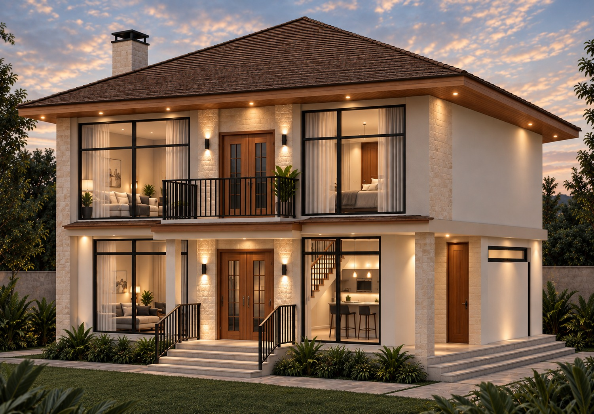
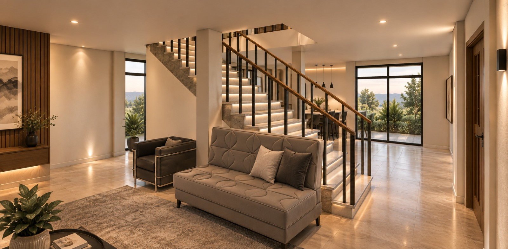

DISEÑO + CONSTRUCCIÓN

Casa G.S. fue concebida como una vivienda unifamiliar que integra funcionalidad, confort y espacios pensados para la vida cotidiana. La propuesta organiza sus ambientes de manera clara, buscando que cada espacio responda a las necesidades de quienes la habitan.
La vivienda cuenta con tres dormitorios, una habitación principal y dos dormitorios adicionales. El proyecto incorpora además balcones y diferentes espacios sociales como sala, comedor, chimenea, bar y despensa.
Un proyecto desarrollado desde el diseño hasta su construcción, cuidando la distribución y relación entre cada uno de sus ambientes.